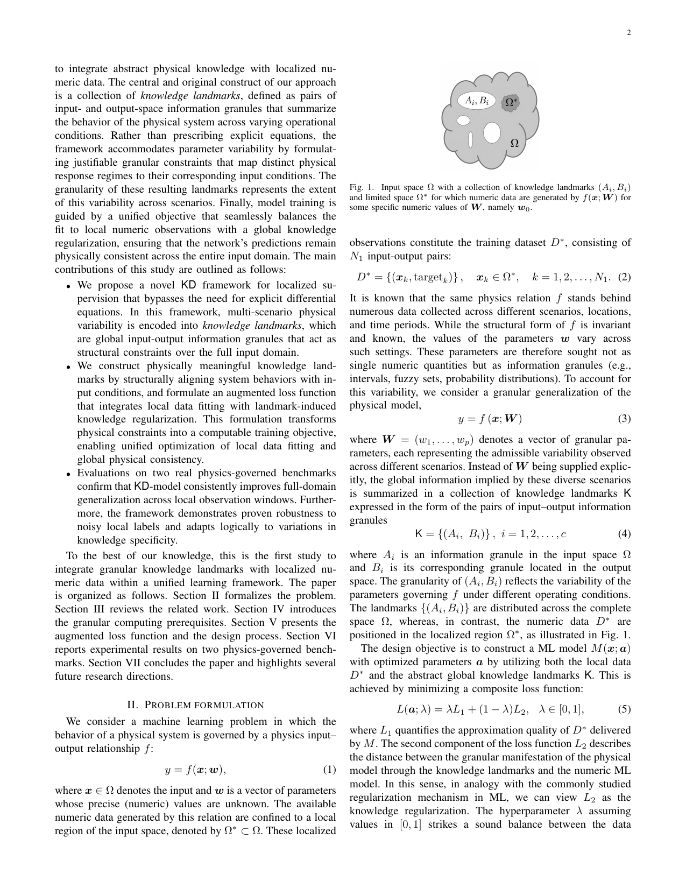

0. 名称消歧与论文来源确认
0.1 当前文档主要对应哪篇论文
当前这份文档主要对应的是：
- Dai, Pedrycz, Xu, Liu, Wang, arXiv 2026, Informed Machine Learning with Knowledge Landmarks
本文默认讨论的 Knowledge Landmarks，都指这篇论文提出的 knowledge-data ML (KD-ML) 框架：
- 数据是局部的、数值精确的；
- 知识是全局的、抽象的、粒化的；
- 模型通过
data fitting + knowledge regularization的统一损失同时利用二者。
0.2 它在阅读路线里的位置
如果把前面的 granular 主线写成：
Granular Computing for ML：为什么需要粒化与可信表达；Fuzzy Rule-Based -> Granular：怎样把数值模型升级为 granular output；
那么这篇进一步回答的是：
当知识本身也不是硬方程、硬规则，而是“某类输入区域大概对应某类输出范围”时，怎样把这种全局模糊知识和局部数值数据一起训练？
因此，这篇是当前仓库材料里最像“后续可长成研究原型”的一篇。
0.3 本文默认读者起点
下面会直接进入公式，但不假设你已经熟悉：
- fuzzy membership；
- conditional FCM；
- regularizer；
- PINN / physics-informed 方法。
所以所有核心符号都会在第一次出现时给出完整定义。
0.5 最小问题设定与记号
0.5.1 局部数据与全局物理关系
作者假设一个物理输入输出关系 $$ y=f(x;w), $$ 其中：
- $x\in\Omega$ 是输入；
- $\Omega$ 是完整输入域；
- $w$ 是未知但会随场景变化的参数。
真正可获得的数值数据只位于局部子区域 $$ \Omega^\ast\subset\Omega, $$ 形成数据集 $$ \mathcal D^\ast=\{(x_k,\operatorname{target}_k)\}_{k=1}^{N_1}, \qquad x_k\in\Omega^\ast. $$
也就是说：
- 数据是精确的；
- 但覆盖很局部；
- 直接用它训练的模型很容易只会局部插值，不会全局外推。
0.5.2 knowledge landmarks 的数学对象
作者用一组输入输出信息粒对来表达全局知识： $$ \mathcal K=\{(A_i,B_i)\}_{i=1}^c. $$
这里更严谨地写，$A_i$ 和 $B_i$ 可以被看作两个 membership function： $$ A_i:\Omega\to[0,1], \qquad B_i:\mathbb R\to[0,1]. $$
其中：
- $A_i(x)$ 表示输入 $x$ 属于第 $i$ 个输入粒的程度；
- $B_i(y)$ 表示输出 $y$ 属于第 $i$ 个输出粒的程度。
每一对 $(A_i,B_i)$ 就是一个 knowledge landmark。
它的直觉含义是：
当输入落在某类区域 $A_i$ 附近时，输出应当与某类粒化结果 $B_i$ 相匹配。
0.5.3 统一训练目标
模型记为 $$ M(x;a), $$ 其中 $a$ 为待学习参数。
论文的核心损失写成 $$ L(a;\lambda)=\lambda L_1+(1-\lambda)L_2,\qquad \lambda\in[0,1]. $$
更具体地写： $$ L(a;\lambda)=\lambda L_{\text{data}}(a)+(1-\lambda)L_{\text{knowledge}}(a). $$
其中：
- $L_{\text{data}}$ 负责拟合局部数值数据；
- $L_{\text{knowledge}}$ 负责遵守全局 knowledge landmarks；
- $\lambda$ 决定局部数据与全局知识谁更主导。
这不是普通“损失加权”的小技巧，而是整篇论文的中心结构。
0.5.4 数据项：先守住局部数值精度
文中给出的数据项是一个归一化均方误差： $$ L_{\text{data}}(a) = \frac{1}{N_1 y_{\text{span}}^2} \sum_{k=1}^{N_1} \big(M(x_k;a)-\operatorname{target}_k\big)^2, $$ 其中 $$ y_{\text{span}}=y_{\max}-y_{\min} $$ 表示输出范围长度，用来做归一化。
因此：
- 如果模型在局部数据区预测得准，$L_{\text{data}}$ 就小；
- 如果局部拟合差，$L_{\text{data}}$ 就大。
0.5.5 知识项：再要求全局行为和 landmark 匹配
知识项则在整个域上的采样点 $\{x_q\}_{q=1}^{N_2}\subset\Omega$ 上计算： $$ L_{\text{knowledge}}(a) = \frac{1}{N_2} \sum_{q=1}^{N_2} \sum_{i=1}^c A_i(x_q)\bigl(1-V_i(x_q;a)\bigr)^2, $$ 其中 $$ V_i(x;a)=\operatorname{cov}(M(x;a),B_i)\operatorname{sp}(B_i). $$
这里 $\operatorname{sp}(B_i)$ 是第 $i$ 个输出粒的 specificity，衡量它有多“尖锐”；
而 $\operatorname{cov}(M(x;a),B_i)$ 在这里更像“预测值与粒 $B_i$ 的匹配度”。
若 $B_i$ 本身是区间 $$ B_i=[\underline b_i,\overline b_i], $$ 那么最自然的 specificity 写法就是 $$ \operatorname{sp}(B_i) = 1-\frac{\overline b_i-\underline b_i}{y_{\text{span}}}. $$
为了让这个式子真正可读，可以把两种最常见情况分开写。
若 $B_i$ 是区间 $$ B_i=[\underline b_i,\overline b_i], $$ 那么最简单的匹配度可写成 $$ \operatorname{cov}(M(x;a),B_i) = \mathbf 1\!\left[\underline b_i\le M(x;a)\le \overline b_i\right]. $$
若 $B_i$ 是模糊集，则最简单写法就是直接取它的隶属度： $$ \operatorname{cov}(M(x;a),B_i)=B_i(M(x;a)). $$
于是你可以把 $$ V_i(x;a) $$ 理解成：
- 预测值是否落在“该去的输出粒”里；
- 如果落进去了，落得有多像；
- 同时还乘上这个输出粒本身的 specificity。
0.5.6 landmarks 是怎样造出来的
构造流程不是直接人工写 if-else，而是：
- 先在输出空间构造 context granules $\{B_i\}$；
- 再在每个 context 条件下，用 conditional FCM 在输入空间求 prototype；
- 最后用 justifiable granularity 把 prototype 提升成输入粒 $A_i$。
其中 conditional FCM 的目标函数可以写成 $$ J_i = \sum_{k=1}^{N}\sum_{j=1}^{K_i} u_{ijk}^m\|x_k-v_{ij}\|^2, $$ 并满足约束 $$ \sum_{j=1}^{K_i}u_{ijk}=B_i(y_k), \qquad k=1,\dots,N. $$
这里：
- $u_{ijk}$ 是样本 $x_k$ 在第 $i$ 个输出 context 下、属于第 $j$ 个输入簇的程度；
- $v_{ij}$ 是对应 prototype；
- $m>1$ 是模糊化系数。
这个约束式特别关键，因为它表示：
在第 $i$ 个输出 context 下，输入空间里的聚类总权重恰好等于该样本属于输出 context $B_i$ 的程度。
也就是说，输入粒不是凭空聚出来的，而是“被输出语境条件化”了。
0.5.7 从 prototype 到输入粒
得到 numeric prototype $v_{ij}$ 后，再用 justifiable granularity 构造输入粒。
若只看某一维 $d$，可以把候选宽度记为 $\sigma$，然后做 $$ \sigma_{ij}^{(d)} = \arg\max_{\sigma\in(0,1]} \operatorname{cov}_{ij}^{(d)}(\sigma)\operatorname{sp}(\sigma). $$
最后把各维度组合成输入粒。若采用乘积 t-norm，则可写成 $$ A_{ij}(x)=\prod_{d=1}^n \mu_{ij}^{(d)}(x^{(d)}). $$
这一步你不必深究实现细节，只要抓住主线：
- 先有输出粒；
- 再有条件化输入聚类；
- 再把 prototype 提升成输入粒；
- 最终形成 $(A_i,B_i)$。
0.5.8 一个 1D toy 例子
假设真实函数定义在 $$ \Omega=[-2,2], $$ 但你只在 $$ \Omega^\ast=[-0.5,0.5] $$ 里采到数据。
这时你还知道三条全局知识：
- 当 $x\in[-2,-1]$ 时，$y$ 大致落在 $[1.5,2.5]$；
- 当 $x\in[-0.5,0.5]$ 时，$y$ 大致落在 $[-0.2,0.2]$；
- 当 $x\in[1,2]$ 时，$y$ 大致落在 $[-2.5,-1.5]$。
那么这三条知识就可以写成三个 landmarks： $$ (A_1,B_1),\quad (A_2,B_2),\quad (A_3,B_3). $$
Knowledge Landmarks 论文做的事情，就是把这类“输入区域大概对应输出范围”的知识，变成一个可训练的 regularizer。
1. 论文想解决的核心问题
1.1 直觉问题
这篇论文瞄准的是一个很真实的科研困境：
我们常常只有局部、昂贵、稀疏的数值数据，但专家又知道一些全局性的行为范围、趋势和场景规律。怎样把这两类信息一起用起来？
传统纯数据驱动模型的问题是：
- 在 $\Omega^\ast$ 内插值可能不错；
- 但一离开局部数据区就容易失真。
1.2 为什么 PINNs 或硬方程方法还不够
physics-informed 方法经常要求：
- 显式 PDE；
- 可微物理残差；
- 点级精确关系。
但很多真实问题里，知识并不是这样给出的，而更像：
- operational limits；
- monotonicity；
- behavioral envelopes；
- 某些输入区间大概对应某些输出范围。
也就是说，知识是：
- 全局的；
- 多场景的；
- 带模糊边界的；
- 粒化的。
Knowledge Landmarks 正是为了处理这种知识形态而设计的。
2. 论文中的关键图
2.1 Figure 1：局部数据与全局 landmarks 的结构关系
这篇最关键的不是某个复杂定理，而是 Figure 1。

这张图清楚表达了两件事：
- 数据只分布在局部子域 $\Omega^\ast$；
- knowledge landmarks 分布在整个输入域 $\Omega$。
所以作者不是在说“用知识补一点监督信号”，而是在说：
用全局粒化知识去约束模型在未观测区域的行为。
2.2 这张图为什么特别重要
因为它把这篇和普通 regularization 区分开了。
普通正则化常常只是：
- 防止参数过大；
- 防止过拟合；
- 惩罚某种简单结构。
而这里的正则项是：
- 具有物理或领域语义的；
- 明确分布在输入空间不同区域的；
- 以
(A_i,B_i)粒化对形式出现的。
因此这不是 generic regularizer，而是真正的 knowledge regularizer。
3. landmarks 的构造机制
3.1 第一步：先粒化输出空间
作者先在输出空间构造一组 context granules $\{B_i\}$。
它们可以理解为若干输出语境，例如：
- 低输出区；
- 中输出区；
- 高输出区；
- 或更细的物理行为区间。
论文里通过分位数和高斯 membership 函数来做这一步，使得这些 context：
- 能覆盖有效输出范围；
- 又不会过于粗糙。
3.2 第二步：在每个输出 context 下做 conditional FCM
给定某个 $B_i$，作者不是直接在整个输入空间聚类，而是做条件模糊聚类：
只在“属于该输出 context 的程度”这个条件下，在输入空间中找对应 prototype。
于是得到的不是普通聚类，而是：
- 某种输出语境所对应的输入结构。
这一步非常关键，因为它把输入粒和输出粒配对起来了。
3.3 第三步：把 prototype 提升为输入粒
得到 numeric prototype 后，再用 justifiable granularity 构造输入粒 $A_i$。
这里依然是熟悉的思想：
- coverage 保证输入粒有足够数据支持；
- specificity 保证输入粒不至于太宽而丧失语义。
于是最终形成的 landmarks 不是点对点标签，而是：
输入区域粒 $\leftrightarrow$ 输出行为粒
的结构化配对。
4. 增强损失到底在做什么
4.1 数据项：守住局部精确拟合
数据项的职责很明确：
- 让模型在可观测局部窗口 $\Omega^\ast$ 上不丢失数值精度；
- 防止知识项把模型整体拉向过于宽松的抽象表达。
因此，Knowledge Landmarks 不是“用知识替代数据”，而是“让知识补数据看不见的地方”。
4.2 知识项：让全局行为与 landmarks 匹配
知识项不是直接拿输出和一个硬标签比较，而是：
- 看输入点在各个 $A_i$ 下的激活；
- 再看模型预测和对应 $B_i$ 的匹配程度；
- 若输入区域与输出行为不协调，就增加惩罚。
它的本质是：
用粒化匹配关系替代精确方程残差。
4.3 $\lambda$ 不是普通权重，而是数据-知识平衡旋钮
这里的 $\lambda$ 很重要。
- $\lambda$ 大：更信局部数值数据；
- $\lambda$ 小：更信全局 knowledge landmarks。
因此它不是随便调的系数，而是：
用来衡量“当前任务里，局部数据与全局知识谁更可靠”的核心超参数。
5. 这篇论文最重要的实验结论
5.1 局部训练数据不足时，landmarks 能提升全域泛化
论文在两个 physics-governed benchmark 上都展示了：
- baseline 只用局部窗口数据训练；
- KD-model 额外使用全局 landmarks；
- 后者在全域误差上明显更优。
这说明 landmarks 的真正价值不在于拟合训练点，而在于：
在未观测区域维持物理一致、语义合理的行为。
5.2 数据越脏，$\lambda_{\mathrm{opt}}$ 越小
论文一个很漂亮的发现是：
当局部标签噪声增大时，最优 $\lambda$ 会下降。
它的含义很直观：
- 数据越不可靠；
- 系统就越应当降低对数据项的依赖；
- 转而更多依赖 knowledge landmarks。
这说明该框架不只是“把知识加进去”，而是在自适应地调整信任分配。
5.3 知识越粗，$\lambda_{\mathrm{opt}}$ 越大
作者还系统改变了参数空间宽度，从而改变 landmarks 的 specificity。
观察到：
当知识粒度变粗、specificity 下降时，最优 $\lambda$ 反而上升。
也就是说：
- 知识越宽、越不具体；
- 它提供的约束越弱；
- 模型就越需要回头依赖局部数值数据。
这个现象非常合理，也非常有研究味道。
6. 这篇为什么很有启发性
6.1 它把“知识”从硬方程扩展成粒化行为约束
这是全文最值得记住的思想：
知识不一定是 PDE，也不一定是逻辑公式；它也可以是“某类输入区域大致对应某类输出行为”的粒化结构。
这极大扩展了 informed ML 可处理的知识类型。
6.2 它把 Granular Computing 与 informed ML 真正接上了
前两篇 granular 论文更多还停留在：
- 为什么需要粒；
- 输出怎样粒化。
而这篇真正把：
- 局部数据；
- 全局粒化知识；
- 统一损失；
- regularization 训练；
接成了一条完整方法链。
6.3 它很适合往你自己的研究问题上迁移
这篇结构特别适合改造为自己的任务，因为你只需要决定：
- 局部数据在哪里；
- 全局知识怎样粒化；
- landmarks 怎样设计；
- knowledge loss 怎样匹配。
这比要求显式 PDE 的方法自由得多。
7. 它和本地 toy 代码的对应关系
当前仓库已经有一个很贴近本文结构的最小复现：
这个 toy 保留了原论文最核心的四个元素：
- 只有局部区域有数值数据；
- 全局空间有人为构造的 landmarks；
- 目标函数由
data fitting + knowledge regularization组成； - 对比 baseline 和 knowledge-guided model 的全域泛化。
7.1 toy 与论文的对应
toy 中的 landmarks 被简化成区间对：
- 输入区间；
- 输出区间。
knowledge regularizer 则被简化成：
- 预测落在输出区间外时施加惩罚。
这比原论文更简单，但非常适合先把机制跑通。
7.2 为什么这个 toy 值得继续扩
因为它已经具备论文结构的最小雏形，下一步只要逐步增强：
- 从 interval landmark 升级到 fuzzy landmark；
- 从单一 landmark set 升级到不同质量知识对照；
- 从 1D toy 升级到更复杂输入域；
就能自然向论文靠近。
8. 它和前后论文的关系
8.1 和 Fuzzy Rule-Based -> Granular 的差别
前一篇主要在讲：
- 模型输出层怎么粒化；
- consequent granule 怎么构造。
这一篇则更进一步：
- 知识本身就是粒；
- 数据和知识一起决定损失；
- 学习目标是局部拟合与全局一致性的平衡。
8.2 和 rough set 的差别
两者都重视：
- granules；
- uncertainty；
- abstraction。
但 rough set 更偏：
- 数据分析；
- 邻域关系；
- 特征选择或属性约简。
Knowledge Landmarks 更偏：
- 知识-数据联合学习；
- 训练目标设计；
- 全域泛化。
9. 局限性与可延展点
9.1 landmarks 的构造质量极其关键
这篇最大的风险也很明显：
- 如果 landmarks 质量差；
- 或粒度设得过粗 / 过偏；
- 模型会被不良知识带偏。
因此 knowledge design 不是可有可无的附属工作，而是方法本体的一部分。
9.2 当前模型仍是数值模型，不是 granular 模型
论文结尾也明确指出：
- 现在学习器本身仍是 numeric；
- granular 的主要位置在知识表示和 regularizer 上。
因此自然的下一步就是：
让模型参数或输出本身也变成 granular object。
9.3 多知识源、多粒度知识还没真正展开
现实问题里往往同时存在：
- 多种来源知识；
- 多个可信度等级；
- 不同粒度的局部规则和全局规律。
这篇开了头，但没有完全展开这些更复杂情形。
10. 最小复现建议
10.1 最适合先做什么
最稳的起步就是沿着当前仓库 toy 继续做：
- 固定一个 1D 或 2D 真函数；
- 只在局部窗口采样训练数据；
- 手工写几组输入区间-输出区间 landmarks；
- 比较 baseline 与 knowledge-guided model 的全域测试误差。
10.2 三个最值得做的对照
good landmarksvs baselinecoarse landmarksvsgood landmarksmixed / shifted bad landmarksvsgood landmarks
这三个对照分别对应：
- 知识是否有帮助；
- 知识粒度是否重要；
- 错误知识会怎样误导模型。
10.3 最值得继续往论文方向推进的点
- 把 interval landmarks 升级为 fuzzy landmarks；
- 显式分析 $\lambda$ 与噪声水平、knowledge specificity 的关系；
- 尝试把输出模型本身也粒化。
11. 一页压缩总结
如果只保留最关键的几句话，那么这篇论文的骨架就是：
- 数据只覆盖局部子域 $\Omega^\ast$。
- 全局知识被写成一组粒化 landmark： $$ \mathcal K=\{(A_i,B_i)\}_{i=1}^c. $$
- 模型通过统一损失 $$ L(a;\lambda)=\lambda L_{\text{data}}+(1-\lambda)L_{\text{knowledge}} $$ 同时拟合局部数据并遵守全局知识。
- $\lambda$ 负责平衡数据可信度与知识可信度。
所以它真正解决的是：
当可获得的数据是局部的、知识是全局的且带粒化不确定性时，怎样把两者放进同一个可训练框架，提升模型的全域泛化能力。
而它真正付出的代价是：
knowledge landmark 的构造质量、粒度设定和匹配机制都会变成方法成功与否的关键变量。